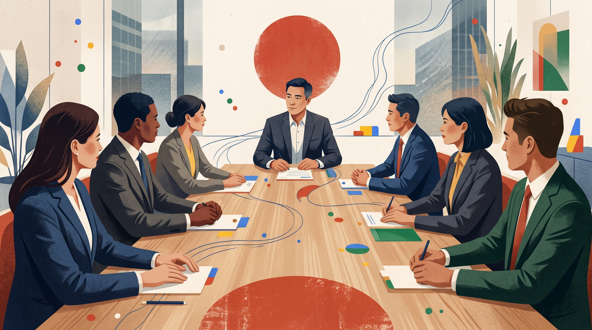

Interactive field guide
US ↔ Japan business communication for Google Advertising
A practical workshop for US Google Advertising managers working with Japanese colleagues, agencies, and clients.
Advertising inventoryProposalsMeasurementClient trust

1 Scenario
“We’ll consider the proposal carefully.”
A US manager presents an important proposal. The Japanese client team is polite, asks few questions, and does not object. The next step slows down.
Question: which model explains what the US manager may be missing?
The words are polite.
The signal is the work.
Hofstede shows why the stall needs structure
US uncertainty avoidance (UAI)
46 Japan uncertainty avoidance (UAI)
92 Reasoning: Hall explains why the sentence may carry implicit meaning; Hofstede uncertainty avoidance data explain why an undefined proposal can require stronger risk controls before approval.
Data/citations: Hofstede-style country data; Hall 1976; Hall & Hall 1987; Gudykunst & Nishida 1986; Hofstede et al. 2010.
Interactive
Which lens explains the stall first?
Scenario: A US manager presents an important proposal that requires local commitment and follow-through. The Japanese client team is polite, says “we will consider it carefully,” asks few questions, and then the next step slows down.
Vote on your phone first. We use the result as the entry point, then read the same situation through the model lens.
- Hall: the signal was indirect / contextual
- Hofstede: the proposal felt under-controlled
- Trompenaars: the route through roles was wrong
- World Values Survey: disagreement needed a safer channel
Scan once, then choose the question on your phone.
Readout
What did the room think caused the stall?
Same scenario: A US manager presents an important proposal that requires local commitment and follow-through. The Japanese client team is polite, says “we will consider it carefully,” asks few questions, and then the next step slows down.
Facilitator: There can be more than one useful lens. Use the strongest vote to open the discussion, then show why Hofstede helps with the control/risk layer.
Hofstede lens
Hofstede shows why “yes” needs structure.
Use the lens on the scenario: The meeting did not fail because people were dishonest. It stalled because commitment felt too exposed before risk, authority, and implementation control were clear enough.
United States tendency
Lower uncertainty avoidance makes “test, learn, adjust” feel normal. A rough proposal can be a start.
Japan tendency
Higher uncertainty avoidance makes an undefined next step harder to carry internally. The proposal needs boundaries before visible commitment.
Manager move: Replace “Can we move forward?” with “What condition would make this safe enough to recommend internally?”
Interactive
What should the manager do with “This may be difficult”?
Scenario: After the proposal, the senior client says “This may be difficult” while staying polite. Nobody gives a hard no.
Vote on your phone first. We use the result as the entry point, then read the same situation through the model lens.
- Ask what risk or condition must be resolved
- Push for a launch date because nobody objected
- Ask for a clear yes/no in the room
- Assume the proposal is rejected
Scan once, then choose the question on your phone.
Readout
How did the room read the indirect signal?
Same scenario: After the proposal, the senior client says “This may be difficult” while staying polite. Nobody gives a hard no.
Facilitator: Use this to show that Hall helps decode where meaning is carried: not only in words, but in context, pause, and indirect difficulty signals.
Hall lens
Hall shows where the real message is carried.
Use the lens on the scenario: The words stayed polite. The meaning was carried by silence, sequencing, who did not speak, and what was postponed.
United States tendency
More meaning is expected in explicit words: questions, objections, next steps, direct disagreement.
Japan tendency
More meaning can sit around the words: timing, pause, relationship position, indirect difficulty signals, and who is present.
Manager move: Treat “This may be difficult” as a request to uncover the condition, not as vague politeness.
Compare Silence and turn-taking
Silence means different things in the two systems.
Communication feature
United States tendency
Japan tendency
Silence
Often uncomfortableSilence can be read as confusion, lack of energy, or an invitation to fill the gap.
Often meaningfulSilence can signal respect, processing, disagreement management, or room for the speaker to finish.
Verbal style
Think aloudWords are used to show intention, momentum, and clarity.
Use fewer wordsNon-verbal context and shared understanding can carry more communicative load.
Meeting implication
Fast clarificationThe manager may ask for immediate explicit reactions.
Turn-taking respectThe safer move is to leave processing room and invite concerns through a non-embarrassing channel.
Compare Monochronic time
Time discipline is not the same as decision speed.
Time-orientation lens
United States
Japan
Orientation
MonochronicTime discipline, scheduling, and sequence matter.
Formal punctualityTiming signals seriousness, preparation, and respect for coordinated work.
Meaning of lateness
Professional issuePunctuality matters, but tardiness may sometimes be interpreted through acceptable self-interest.
Team concernLateness can signal lack of concern for the team and lack of professionalism.
Proposal implication
Timeline as efficiencyA deadline can be framed as speed and momentum.
Timeline as reliabilityA deadline also signals seriousness, preparedness, and respect for coordinated work.
Interactive
What is the next useful move?
Scenario: The US manager expects one owner and one date. The Japanese side wants the proposal reviewed by finance, the agency partner, and a senior sponsor before naming a next step.
Vote on your phone first. We use the result as the entry point, then read the same situation through the model lens.
- Map who must be comfortable before the next step
- Ask for one final decision owner immediately
- Send a shorter deck and wait
- Escalate because the room was non-committal
Scan once, then choose the question on your phone.
Readout
How did the room route the decision?
Same scenario: The US manager expects one owner and one date. The Japanese side wants the proposal reviewed by finance, the agency partner, and a senior sponsor before naming a next step.
Facilitator: Use this to show that the route through roles and relationships can be part of decision quality, not just slowness.
Trompenaars lens
Trompenaars shows why the route matters.
Use the lens on the scenario: The issue is not only whether the proposal is rational. It is whether the right people can carry it through the right relationship and approval route.
US tendency
Move through a named owner, a rule, and a date. The accountable person is expected to decide or escalate.
Japan tendency
Move through role alignment, relationship safety, and consensus. Quality control can happen before the formal yes.
Manager move: Ask “who needs to be comfortable carrying this?” before asking “who owns the decision?”
Interactive
How do you surface the hidden objection?
Scenario: A junior client-side specialist sees a risk in the plan, but does not challenge the senior person in the meeting.
Vote on your phone first. We use the result as the entry point, then read the same situation through the model lens.
- Use a private risk-check or written concerns round
- Ask everyone to challenge the plan publicly
- Treat silence as agreement
- Avoid mentioning disagreement again
Scan once, then choose the question on your phone.
Readout
Which channel makes disagreement safer?
Same scenario: A junior client-side specialist sees a risk in the plan, but does not challenge the senior person in the meeting.
Facilitator: Use this to show that voice norms affect how disagreement appears. The goal is not forcing US-style candor; it is creating a safe channel for useful disagreement.
World Values Survey lens
WVS shows why disagreement needs a safer channel.
Use the lens on the scenario: A modern business environment can still reward different public behaviors. Direct challenge in the room may feel less useful than structured private clarification.
United States tendency
Self-expression norms make open challenge, visible debate, and immediate preference statements easier to read as productive.
Japan tendency
More emphasis on social order and role-sensitive voice can make public disagreement less comfortable, especially across hierarchy.
Manager move: Create a lower-risk channel: pre-read, written risk list, private agency check, or explicit “what would make this hard?” question.
Apply Safe test card
Turn a vague proposal into a safe test.
Scenario: You want the client to try a new approach. “Let’s test and optimize later” is too open. Build a test card that a Japanese client team can safely carry internally.
1Scope
Inventory, audience, budget, duration.
2Fallback
What happens if results disappoint?
3Reporting cadence
Who sees what, when, and in what format?
4Quality gate
What condition allows expansion, pause, or rollback?
Avoid: “Decide this week to keep momentum.” Urgency alone does not create safety; it can increase pressure.
Facilitator line: “A safe test is not less ambitious. It is easier to defend.”
3 Model-informed recommendations
Operating guidelines for US Google Advertising managers.
Scenario: Before the next Japanese client or partner meeting, translate the model comparison into concrete meeting behavior.
Hall → make implicit risk discussable
After presenting, pause. Then ask: “Which concern should we clarify before this is easy to discuss internally?”
Hofstede → contain the proposal
Define scope, budget, reporting cadence, fallback, and quality gate before asking for commitment.
Trompenaars → route the proposal
Identify formal owner, senior sponsor, agency translator, implementation owner, and hidden blockers.
WVS → create safe voice
Use pre-reads, private written concerns, and risk questions instead of demanding public dissent. Acknowledge risks calmly; do not cover uncertainty with US-style optimism.
Time orientation → respect punctuality meaning
Treat timing as reliability and team respect, not only speed.
Hofstede long-term orientation → frame continuity
Explain how the platform move protects reputation and future quality, not only short-term metrics.
Appendix Source matrix
Cultural model source matrix.
- High-context / low-context communication: Hall (1976), Hall & Hall (1987), Gudykunst & Nishida (1986), Lebra (1987), and Mitrović (2017). Explains indirect wording, silence, context, face, nonverbal signals, and reading between the lines.
- Time orientation / chronemics: Hall (1983), Hall & Hall (1987), Graham & Sano (1989), and Mitrović (2017). Explains why punctuality, preparation, relationship commitment, and decision speed are not the same thing.
- Hofstede dimensions: Hofstede (1983/1984), Hofstede et al. (2010), Mitrović (2017), Taras et al. (2010), Kirkman et al. (2017), and Beugelsdijk & Welzel (2018). Explains hierarchy, group alignment, uncertainty control, achievement/team quality, long-term orientation, and model limits.
- Trompenaars dimensions: Trompenaars & Hampden-Turner (1997/1998) and Mitrović (2017). Explains rules plus relationship context, communitarian consensus, neutral emotional display, status/role sensitivity, sequential/synchronous timing, and control/harmony assumptions.
- World Values Survey / Inglehart-Welzel: WVS documentation and Beugelsdijk & Welzel (2018). Explains self-expression, authority, voice channels, and why public dissent may not be the safest signal path.
- Emotion / positivity caution: Koopmann-Holm & Tsai (2014). Supports the caution that US-style positive reframing is culturally shaped; in Japanese business contexts, risks should be acknowledged calmly rather than covered with optimism.
- Evidence boundary: Majidi et al. (2015), Taras et al. (2010), and Kirkman et al. (2017). Use national model scores as starting hypotheses, not deterministic labels; validate assumptions with local Google Japan colleagues.
Commitment 30-day behavior
Choose one model-informed behavior to test next week.
Hall
Leave silence after important questions and ask what remains hard to say explicitly.
Hofstede
Rewrite one proposal with scope, fallback, reporting cadence, and quality gate.
Trompenaars
Map who must carry the advertising-space recommendation after the meeting.
World Values Survey (WVS)
Create a private concern channel before asking for public agreement.
Pair exercise: write one sentence you will actually use in a Japanese client or partner meeting.
Appendix
References included in the deck and report
- Beugelsdijk, S., & Welzel, C. (2018). Dimensions and dynamics of national culture: Synthesizing Hofstede with Inglehart. Journal of Cross-Cultural Psychology, 49(10), 1469–1505.
- Dyer, J. H., & Chu, W. (1998). Determinants of trust in supplier relations: Evidence from the automotive industry in Japan and the United States. Journal of Economic Behavior & Organization, 34(3), 387–417.
- Graham, J. L., & Sano, Y. (1989). Beware of Japanese negotiation style: How to negotiate with Japanese companies. Northwestern Journal of International Law & Business, 10(2), Article 23.
- Gudykunst, W. B., & Nishida, T. (1986). Attributional confidence in low- and high-context cultures. Human Communication Research, 12(4), 525–549.
- Hall, E. T. (1976). Beyond Culture. Anchor Books.
- Hall, E. T., & Hall, M. R. (1987). Hidden Differences: Doing Business with the Japanese. Anchor Press/Doubleday.
- Hofstede, G. (1983). The cultural relativity of organizational practices and theories. Journal of International Business Studies, 14, 75–89.
- Hofstede, G. (1984). Cultural dimensions in management and planning. Asia Pacific Journal of Management, 1, 81–99.
- Hofstede, G., Hofstede, G. J., & Minkov, M. (2010). Cultures and Organizations: Software of the Mind (3rd ed.). McGraw-Hill.
- Kirkman, B. L., Lowe, K. B., & Gibson, C. B. (2017). A retrospective on Culture’s Consequences: The 35-year journey. Journal of International Business Studies, 48, 12–29.
- Lebra, T. S. (1987). The cultural significance of silence in Japanese communication. Multilingua, 6(4), 343–357.
- Smith, P. B., Peterson, M. F., Schwartz, S. H., & Koopman, P. L. (2002). Cultural values, sources of guidance, and their relevance to managerial behavior: A 47 nation study. Journal of Cross-Cultural Psychology, 33(2), 188–207.
- Smith, P. B., Trompenaars, F., & Dugan, S. (1995). The Rotter locus of control scale in 43 countries: A test of cultural relativity. International Journal of Psychology, 30(3), 377–400.
- Taras, V., Kirkman, B. L., & Steel, P. (2010). Examining the impact of Culture’s Consequences: A three-decade, multilevel, meta-analytic review of Hofstede’s cultural value dimensions. Journal of Applied Psychology, 95(3), 405–439.
- World Values Survey Association. (n.d.). World Values Survey Wave 7 documentation.
- Koopmann-Holm, B., & Tsai, J. L. (2014). Focusing on the negative: Cultural differences in expressions of sympathy. Journal of Personality and Social Psychology, 107(6), 1092–1115. https://doi.org/10.1037/a0037684
- Majidi, M., Ashurbekov, R. K., Altaliyeva, A., & Kowalski, S. (2015). Western and Central Eurasian cultural differences: Germany, Kazakhstan, United States of America, and Uzbekistan. Organizational Cultures: An International Journal, 14(3–4), 1–22. https://doi.org/10.18848/2327-8013/CGP/v14i3-4/50954
- Mitrović, M. (2017). Cultural dimensions of Japan & East-Asian cluster in tourism. International Journal of Computational Engineering Research, 7(8), 27–35. https://www.ijceronline.com/papers/Vol7_issue8/E07082735.pdf